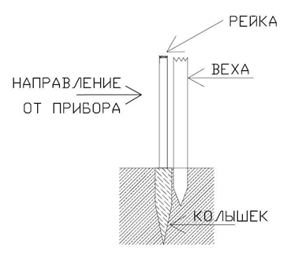

Порядок проложения тахеометрического хода следующий:
1. Установить прибор над пунктом (точкой) хода и привести его в рабочее положение. Реечники в это время устанавливают рейки на соседних пунктах хода в отвесном положении (см. ниже п.3).
2. Измеряется высота прибора от верха колышка до оси вращения трубы с точностью до десятых долей сантиметра. Измерение производят с помощью 2-х метровой металлической рулетки: сначала от верха колышка до верхней грани головки штатива, потом от верхней грани головки штатива до оси вращения зрительной трубы. Далее вычисляют среднее из результатов измерений и округляют его до целых сантиметров.
3. Установка вех и реек на предыдущем и последующем пунктах хода. Вехи следует устанавливать (втыкать в землю), за колом в створе наблюдаемой линии, как показано на рисунке. Рейки устанавливаются на колышек таким образом, чтобы их оси проходили через центр колышка и занимали отвесное положение. Для наиболее точной установки реек в отвесное положение следует использовать отвесы.
